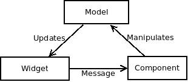
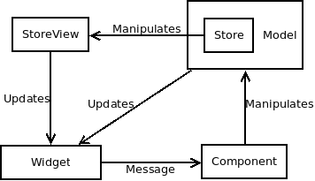

Stores for relm4
This book introduces concept of stores and provides samples of usage in relm4 applications.
What is store and why do I need it?
Store is shared data collection. There are few benefits of using stores.
- It makes much easier to separate application business model and view.
- It makes state propagation much easier.
- It reduces the complexity of the applications.
Other way of thinking about Store is as really simple database specialized in making relm4 applications easier to write.
What is the price to use it?
Now it's pre-alpha state. So you shouldn't use it at all. :)
To tell the truth, the target is to make it possible to use it with minimum costs and integrate it as tightly to the relm4 as possible. Currently it's not trivial to use stores since many things are not completed.
What this book is not about?
- It's not about
rust. Examples consists of multiple files and you are expected to addmod.rsfiles with appropriate exports by yourself (or check the directory with example). On the other hand we did our best to make sure that any file which has more then module declarations and reexports will be documented here. - It's not about relm4. You won't learn how widget macro works or how events are propagated. We might talk a bit about that but only to make code presented here understandable.
- You won't learn how to write your own store/relm4 factory from this book. Writing the store or relm4 factory is complex task. There is a plan to add a chapter about that, but it won't happen anywhere in the near future.
- For the same reason as factories, StoreViews are also out of scope. Good for you we already provide some implementations.
How to read the book
There are two ways to read this book. First one is to follow the chapters in order. This will gently introduce you to all concepts required to use stores. Second way is to go directly to the part you are interested into. The examples in the book after chapter 1 are just the modifications of the code from previous chapter. Full code of examples you can find in the examples folder.
Window behavior
How it came to existence
It's mid of 2021. I've started to learn Rust for a second time. This time I had an idea for an internal project for my company. I needed to create an gui application.
I've found relm. I've started to learn it. Nice lib. Most people in company are linux/gnome users so gtk was perfect choice. But it was gtk-3 lib and gtk-4 was becoming a main version. After bit of looking around I found a relm4. Now I had a lib to write my application. So let's get started. 2 week later I was in pinch. I had a dataset weighting around 200GB, needed to show it twice, it must have a filtering and grouping. Filtering could be done either global (so both view were applied the same filter) or local so filters are independent or both. So I implemented first version of widget using provided relm4 factories. Doing it was a disaster. Ok. Attempt 2. Let's dive into gtk list views. Bit better. I could do most of things. But now let's repeat process for another data set, and another data set... Tears of blood. Now I received a requirement from one of the users. Scrollbar sucks. It doesn't provide any meaningful information about where user is. So let's just make them steer a speed of scroll (relative scrolling) instead of track position (absolute scrolling). Oh and I forgot. I would like to have an option to change a behavior of visible data if records are inserted in the visible sub set. Now I was sitting in the corner of my room. Crying. I'm the boss. I own this company. I've created a tool for myself. It sucks but makes it better then whatever was before and I only receive complaints... Ok it's useful. My workers just would like to spend a bit time less there. Let's try...
A few relm4 tickets later I knew lib good enough to start. And I ended with creating first version of store. It was even more primitive then any factory in relm4. It supported only adding elements at the end of the set but had an ability to ignore changes outside of visible window.
It's still at beginning of the journey.
Goals of the store library
-
Window behavior on data changes
-
Window transitions
- Add new record
- Slide/reorder
- Remove
- View follows transitions
-
Window transitions
- Relative scrolling
-
Sorting
- Setting natural order
- Store view order
- Grouping
- Trees
-
Implementation of basic store types
-
In memory store
-
Sorting
- Natural order
- Store view order
-
Sorting
- Http/rest store (as external crate)
- Mongo store (as external crate)
-
In memory store
-
Detached view
- Commit
- Filtering
-
Reusable components
-
Pagination component
- Basics
- Make it configurable and generally awesome
-
Pagination component
- Pagination
- View should care about records which are visible only
-
Generic view for the store
- Replaces relm4 factory
- Event propagation to the listeners of the view
Missing things
- Reorder records, for now it triggers reload on the store
Relm4 vs stores
Stores are extension to relm4 but they introduce a separation between a business model and view model.
When you learn relm4 you start by throwing whole application state into model. This model is tightly related to view. You are forced to mix the application code and view related updates.
Stores introduces strict separation of business model and view. So in this book whenever we talk about view model we literally mean structures implementing relm4::Model. All imports will be done as use relm4::Model as ViewModel. When we talk about model or business model we will think about structures implementing relm4_store_record::Record.
What is a benefit of this separation?
Record has stable identifier. This provides a few benefits like:
- You know when you talk about same instance even if they are not binary equal.
- Data becomes data and not the application state.
Both points are interrelated but slightly nuanced. Let's start from second point.
Data becomes data
This is point of view of data users. They don't care about the id itself. They care about the business logic.
Since you have a stable id, you perfectly know when you talk about the same record. So you can keep a cloned values of your model. Update them and later commit them back or drop them at your leisure. You don't need to track information like it's fifth item on list of emails in 3 item in list of users. Just think a bit how much code you would need to write if you must add a record into users and user emails while you have a copy of your data laying somewhere around and you must track this relationship. Since you have a stable id, user model can trivially provide update email logic for things like this.
Same instance even when not binary equal
This is point of view of data management. If you receive a record in a store you know what to do with a record. It either exists in a store or it's something new. This information is stored in records id and not a complex logic of passing data around.
So your store is committing an instance of user. Now since your user has stable id, you know if this record was stored without even looking into whatever your store backend is. Either final id is set or not. Your whole logic around business doesn't care about id's values. Whatever they are they are. What's important is if they are set they are known for eternity.
What's more new id is not empty. It has a value, so if you store your record in the database, or file, or some other service you just need to propagate a tuple of new id, permanent id to the places you store a copy of your record without tracking the position, nesting, or any other extra information. Your model logic have a way to find it wherever it is since it needs to be able to retrieve it in running application.
List of differences
| relm4-store | relm4 |
|---|---|
StoreViewComponent: custom component type which knows how to work around all the state updates in presence of the store-view | Component |
StoreViewPrototype: To make a store view/store view component behave. It's like a merge of FactoryPrototype and ComponentUpdate. | FactoryPrototype + ComponentUpdate |
StoreViewInnerComponent: Extra trait extending relm4::Components required by the StoreViewComponent. It allows to send messages to the components in case store was updated. | N/A |
StoreViewContainerWidget: Extra trait extending relm4::Widgets required by the StoreViewComponent. It returns the reference to the widget to which factory will add the widgets. | relm4 doesn't need it. Factory implementation can work it out in all cases |
Application architecture
When you write your application in relm4 you use classic MVC pattern. relm4-store introduces some "proxies" into the picture.
In relm4 terms it looks like this

View sends events to component in reaction to user input and component updates the model witch in turn modifies view. relm4::Model combines two roles housekeeping of data in the app and controller of app and view. This two roles are not mixed up thanks to Rust language itself. relm4::ComponentUpdate interface implementation is the controller part and structure implementing relm4::Model is doing the application model part.
When you use this library then this changes into

How does it fit into my relm4 application
relm4-store tries it's best to be an extension to relm4::Model part of an application.
Data store
Store is part of the relm4's model. Inside of the store you would keep data which should be persisted. For example
You are developing a drawing application. In it user can place shapes and draw lines between shapes. When user adds a shape to the drawing area you append it to the list of shapes. If user draws an arrow you append it to the list of arrows. At any point of time user can select one of the elements on the diagram be it arrow or a shape and change it's color.
Using relm4-store you would create two stores, one for shapes and one for arrows. Whenever user draws one of the shapes you would add them to appropriate store. Selection of the diagram element would be kept directly in
relm4::Model. State of the color changing window (wherever it's open or not) would also be directly in therelm4::Model. The color change action would on the other hand be sent to one of the stores to handle the update event of one of the records.Saving a file now would require to read the content of the both stores and writing it down to the file.
Store view
Store view is also part of the relm4's model. It represents current state of the user interface. In case of drawing application example
You are developing a drawing application. In it user can place shapes and draw lines between shapes. When user adds a shape to the drawing area you append it to the list of shapes. If user draws an arrow you append it to the list of arrows. At any point of time user can select one of the elements on the diagram be it arrow or a shape and change it's color.
Using relm4-store you would create two views (one for each store) for every drawing area showing the diagram
- Drawing area - 2 store views
- Minimap - 2 store views
- Split view - 2 store views
- ...
You would use a store view to tell you which shapes to draw. So if you add new shape or an arrow then only affected part of the ui would be updated.
Database analogy
Other way of thinking about store is to look at it as database table. The store view in such a case is result of the SELECT statement on the store.
Examples
In the relm4-store-examples/examples you can find code for examples shown here. If it's the final code for the example it's placed in the folder ending with a number. For simple todo application it can be for example todo_2 for the final version from chapter 2. If it's some kind of variation about the code for the application it's suffixed with extra description. For example todo_2_single_scroll shows custom scrollbar being used to navigate a long list.
Chapter summary
- Chapter 1 Really simple todo application which can show up to 10 tasks.
- Chapter 2 Really simple todo application (from chapter 1) extended to use pagination. This allows to remove a limitation of
10 tasksto be seen. - Chapter 3 We will add sorting into the todo application from chapter 2.
Things with undecided order
- Data window behavior StoreViews behavior. How to make view behave in the presence of the new data. Really simple todo application from chapter 2 extended to showcase different possibilities
Setup
Cargo
All examples in this book are using this dependencies in Cargo.toml
[dependencies]
reexport = { package = "relm4-store-reexport", version="0.1.0-beta.2" }
record = { package = "relm4-store-record", version = "0.1.0-beta.2" }
store = { package = "relm4-store", version = "0.1.0-beta.2" }
store-view = { package = "relm4-store-view-implementation", version = "0.1.0-beta.2"}
backend_inmemory = { package = "relm4-store-backend-inmemory", version = "0.1.0-beta.2" }
components = { package = "relm4-store-components", version = "0.1.0-beta.2" }
log4rs = "1.0.0"
Directly from github
[dependencies]
reexport = { git = "https://github.com/mskorkowski/relm4-store", branch = "main", package = "relm4-store-reexport" }
record = { git = "https://github.com/mskorkowski/relm4-store", branch = "main", package = "relm4-store-record" }
store = { git = "https://github.com/mskorkowski/relm4-store", branch = "main", package = "relm4-store" }
store-view = { git = "https://github.com/mskorkowski/relm4-store", branch = "main", package = "relm4-store-view-implementation"}
backend_inmemory = { git = "https://github.com/mskorkowski/relm4-store", branch = "main", package = "relm4-store-backend-inmemory" }
components = { git = "https://github.com/mskorkowski/relm4-store", branch = "main", package = "relm4-store-components" }
log4rs = "1.0.0"
- API is rather stable but somebody might have an idea how to make it better/easier and things will change without a notice
- Running against anything other then
mainbranch is considered mental. We try our best to keepmainworking and tested (as far as tests are created). If you find there is some feature marked asdoneon the goals list and there are issues with it please fill the bug. - If feature isn't marked as complete you can also fill the bug report. This might (or might not) get it prioritized. Definitely you will get the answer as soon as I spot it. You are welcome to contribute by the way.
log4rs
Internally relm4_store is using log crate. reexport::log reexports it. In examples we are setting up log4rs to manage the log output. In examples folder you can find any required configuration file in the etc directory. For example log4rs.yaml for todo_1 is in relm4-store-examples/examples/todo1/etc/log4rs.yaml. At the end of any chapter all configuration filles will be posted.
refresh_rate: 30 seconds
appenders:
stdout:
kind: console
encoder:
pattern: "{h({l})} [ {f}:{L} ] {m}{n}"
root:
level: warn
appenders:
- stdout
loggers:
backend_inmemory::backend:
level: info
Simple todo application
In this section we will introduce basics of stores and implement example todo_1 from examples folder.
todo_1 is simple todo application. Spec goes like this:
- You start with empty list of tasks
- You can add new tasks
- You can mark task as complete
- You can remove tasks4
Goals
This chapter is an introduction to the Store concept. You will find here how to define simple store and how you can use it in relm4 application.
The application is too simple to be good showcase for the capabilities of the Store. In later chapters we will write a more complex applications which would show real benefits of Stores.
Model
We are writing simple todo list. So we need to talk about tasks!
Task will have the description and status wherever it's completed or not.
So let's start with it. Create a file model/task.rs and write there
use std::fmt::{self, Debug, Display, Formatter};
use record::{Id, Record, DefaultIdAllocator, TemporaryIdAllocator};
#[derive(Clone, Debug)]
pub struct Task {
id: Id<Task>,
pub description: String,
pub completed: bool,
}
impl Task {
pub fn new(description: String, completed: bool) -> Self {
Self{
id: Id::new(),
description,
completed,
}
}
}
impl Record for Task {
type Allocator = DefaultIdAllocator;
fn get_id(&self) -> Id<Task> {
self.id
}
fn set_permanent_id(
&mut self,
value: <Self::Allocator as TemporaryIdAllocator>::Type
) -> Result<(), record::IdentityError> {
self.id = Id::from(value);
Ok( () )
}
}
This is minimal implementation for record. It consist of
- Definition of
Taskstructure - Implementation for
Taskwhich provides methodnew. - Implementation of
record::Record(relm4_store_record::Record)
Task structure
First we defined structure Task. It has a three fields. First is an id. This filed is used to identify the record in the store. This id must be stable during whole application execution. Later we have a description. It will contain the description of the task. At the end there is boolean flag which will let us know if the task has been completed or not.
Task derives two traits Clone and Debug. Debug is obvious. Clone is consequence of what Record is. Since you can save a record in the database it's equivalent of Clone. What's more without Clone it would be hard to reason about multiple views showing same record. It also allows to escape the lifetime boundary issues. Store is a collection of records. So whatever you will place there should have 'static lifetime. Now let's think about keeping references to the records with 'static lifetime which are being removed while application is being run. It sounds like going against what `'static' is. It isn't but requires so many lifetime annotations and makes code way overcomplicated.
Implementation of Task
As good practice I strongly suggest
- That you implement
newfor your business model structures.newshould return really "new" instance so identifier should be set toId::New. - In case you need to recreate an instance I would suggest using
frommethod.
It's related to the expected behavior of implementations of Record. Two instances of the business model are expected to represent the same value if their identifier is equal and not when internals are in the same state. You might think about Record as photograph of the business state at some point of time. You can have multiple photos of the Record but it's up to you to tell which is newer and which is older.
We can end our business modelling session now, except I like to add some pretty printing abilities to my business model classes. It's alway useful to be able to println them to see what happens.
impl Display for Task {
fn fmt(&self, f: &mut Formatter<'_>) -> fmt::Result {
let completed = if self.completed {'x'} else {' '};
f.write_str(&format!("[{}] {}", completed, self.description))
}
}
Implementation of record::Record for Task
Here is how we implemented the Record structure.
impl Record for Task {
type Allocator = DefaultIdAllocator;
fn get_id(&self) -> Id<Task> {
self.id
}
fn set_permanent_id(
&mut self,
value: <Self::Allocator as TemporaryIdAllocator>::Type
) -> Result<(), record::IdentityError> {
self.id = Id::from(value);
Ok( () )
}
}
There are two methods and one type defined there. Method get_id is rather self explanatory. It returns current value of record identifier which we discussed in Task structure section. Method set_permanent_id overrides current value of id with new stable final version of identifier.
It's responsibility of the data store and backend to track down this information and propagate it. Why would you need something like that? The scenario I was solving for myself is "how application should behave in presence of slow backend".
Without this feature when I commit a record to the slow backend I need to wait for the backend to respond with information about saving the record and I under which this record was saved before I can safely show it to user. Other method would be to track down which records are committed and which not. This might involve things like remembering that record without id at the 5th position of some list is the one which should be updated when 2nd http request is successful. It sound painful. Implementing it definitely is. Even if we assume you can do it bug free. Write it down 3 times for slightly different scenarios. So how did we solve it then? By making it data definition problem.
- Id must be unique. Two instances of the
Taskare considered to represent same record at maybe different point of time if their id is equal - In scope of the application, you must be able to return new unique id's during whole application lifetime. This allows you to provide temporary id's which are unique in currently running application. It doesn't matter if two running applications provide same unique id because when records from other application will be visible to this application only after being committed to the backend (for example database) which in turn would make them contain permanent id instead of temporary one. So this application will never see temporary id of other application
- You are not allowed to keep copy of records with non permanent id. In most cases it's not an issue. Since after you create a record anc commit it to the database you don't really have a reason to keep copy of it. If for some reason you must keep the record around you are responsible for tracking this information
- Only backend is allowed to call
set_permanent_id
I'm going to elaborate little bit more about 4th point. To make it clear how bad it's to call it outside of the backend.
Let's assume you have a record like that
struct User {
id: Id<User>,
pub name: String,
}
impl Record for User {
type Allocator = UserIdAllocator;
fn get_id(&self) -> Id<Task> {
self.id
}
fn set_permanent_id(
&mut self,
value: <Self::Allocator as TemporaryIdAllocator>::Type
) -> Result<(), record::IdentityError> {
self.id = Id::from(value);
Ok( () )
}
}
Somewhere in the code you've created a code like this:
fn new_user_from(mut u: User) -> User {
let id = UserIdAllocator::getId();
u.set_permanent_id()
}
You compile and test your application. Everything works.
Now few request later you change the user definition:
struct User {
id: Id<User>,
pub name: String,
// must be unique across all users
pub unique_email: String,
}
Your code still compiles. But now anytime you invoke the new_user_from you produce a value which breaks your business model a little bit. If you are not really careful with your tests this error might live in your code base for very long time.
I've seen bugs similar to this one living in the production systems for years. Fixing them afterwards is at least problematic and more often impossible.
Store
We need to keep todo data somewhere. So let's crate a first store in file store/tasks.rs.
use backend_inmemory::InMemoryBackend;
use backend_inmemory::InMemoryBackendConfiguration;
use store::Store;
use crate::model::Task;
pub type Tasks = Store<InMemoryBackend<TasksBuilder>>;
pub struct TasksBuilder {}
impl TasksBuilder{
pub fn build() -> Tasks {
Tasks::new(
InMemoryBackend::new()
)
}
}
impl InMemoryBackendConfiguration for TasksBuilder
{
type Record = Task;
fn initial_data() -> Vec<Self::Record> {
Vec::new()
}
}
That's it folks. Done. We've just implemented first store.
Ok, let's see what happens there
use backend_inmemory::InMemoryBackend;
In this line we import InMemoryBackend. It's a Store backend which keeps all data in the memory. The easiest one to use but you will loose all the data on application restart.
pub type Tasks = Store<InMemoryBackend<TasksBuilder>>;
Here we define the convenient label for our store type. If we decide to change a backend, that's a place where we should do the update. You should never use backend types directly outside your store implementation. This will reduce amount of changes you must do in the code if you switch them. Maybe not often but changing a backend is sometimes necessity and being tight to it is bad. All patterns we will show in this book will try to minimize exposure the backend to the rest of your code.
pub struct TasksBuilder {}
impl TasksBuilder{
pub fn build() -> Tasks {
Tasks::new(
InMemoryBackend::new()
)
}
}
impl InMemoryBackendConfiguration for TasksBuilder
{
type Record = Task;
fn initial_data() -> Vec<Self::Record> {
Vec::new()
}
}
In here we define the builder structure which will provide us the new instance of the store with tasks and provides configuration of your backend. In most of the cases having one structure for both tasks is totally fine. In case you need some fancier builder you will probably split the configuration and keep it private in the module and have builder do just building.
View - Task list
Our view will have a two parts. If you know relm4 you will see lots of similarities here.
- Task widget and tasks list
- Main window
I've decided to split the view this way so each part of implementation is easier to understand.
List of tasks
All snippets in this section should go to view/task_list.rs
List of imports
There will be a lots of them here. I'm providing them here so they won't obstruct the examples later. We will cover all important parts later in this chapter.
use reexport::gtk;
use reexport::relm4;
use reexport::relm4_macros;
use store_view::View;
use gtk::Box;
use gtk::CheckButton;
use gtk::Label;
use gtk::Orientation;
use gtk::prelude::BoxExt;
use gtk::prelude::CheckButtonExt;
use gtk::prelude::EntryExt;
use gtk::prelude::EntryBufferExtManual;
use gtk::prelude::OrientableExt;
use gtk::prelude::WidgetExt;
use relm4::Model as ViewModel;
use relm4::send;
use relm4::Sender;
use relm4::Widgets;
use relm4::WidgetPlus;
use relm4_macros::widget;
use record::Id;
use record::Record;
use store::StoreViewPrototype;
use store::FactoryContainerWidgets;
use store::DataStore;
use store::Position;
use store::window::PositionTrackingWindow;
use crate::model::Task;
use crate::store::Tasks;
Task widget and task list
Firstly we need to define structures which will keep our widgets around.
type StoreMsg = store::StoreMsg<Task>;
pub enum TaskMsg {
Toggle{
complete: bool,
id: Id<Task>,
},
New,
}
#[derive(Debug)]
#[allow(dead_code)]
pub struct TaskWidgets {
checkbox: CheckButton,
label: Label,
root: Box,
}
pub trait TasksListConfiguration {
type ParentViewModel: ViewModel;
fn get_tasks(parent_view_model: &Self::ParentViewModel) -> Tasks;
}
pub struct TasksListViewModel<Config: TasksListConfiguration + 'static> {
tasks: Tasks,
store_view: View<Self>,
new_task_description: gtk::EntryBuffer,
}
Let's discuss it one by one.
The first thing is definition of the StoreMsg type. In your code you will interact with store. Main goal of this type alias is to reduce amount of typing. All stores and store views are using store::StoreMsg to communicate between each other and using it is only way to affect state of the data store. store::StoreMsg is parametrized by the type of Record so you won't be able to send a message of the wrong type to the store.
The second one is TaskWidgets. Exactly same structure you would be defining if you would use relm4 factories. Checkbox to mark task as complete, label to keep task description and a box (root) to keep it together.
The third one is TasksListConfiguration. It's part of the component pattern to allow more then one instance of the component to be shown at the same time. It contains a method get_tasks which will return instance of the store::Store.
Finally TasksListViewModel. First really interesting things happens here. First attribute is tasks it's the data store which keeps all the data. We will need it to notify the store about status changes of the tasks. Second attribute is store_view. It will provide view into your store.
relm4::Model implementation for TasksListViewModel
This part is obvious
impl<Config: TasksListConfiguration> ViewModel for TasksListViewModel<Config> {
type Msg = TaskMsg;
type Widgets = TasksListViewWidgets;
type Components = ();
}
StoreViewPrototype
In here we will implement store::StoreViewPrototype to provide a view for items in the store. You would use StoreViewPrototype trait in all the places where using pure relm4 you would use relm4::factory::FactoryPrototype.
Differences between the relm4::factory::FactoryPrototype and store::StoreViewPrototype
| What | FactoryPrototype | StoreViewPrototype |
|---|---|---|
| Target of implementation | You implement it for the ViewModel. | You implement it for whatever you like. This makes this interface behave more like configuration. |
| Data container | type Factory which points to data container in the ViewModel | type Store which points to data container type. There is no requirement of it being inside of ViewModel. |
| Data visibility | All data in the factory are visible. | Only part of data in the Store is visible. type Window defines how the view window behaves (more in chapter 2 and 3). |
| Method signature | Since you implemented the factory for the ViewModel, it takes self as an argument. You create a widgets to display self. Second is key under which factory is going to find it. Key is unstable and managed by the factory. | It's not bound to self. First is record for which widgets should be created. Second is position in the store. Position in the dataset at the time of widget generation. There is no guarantee to get the same widget in the future when asking store for record at the given position. Record is required to hold stable id by implementing model::Identifialble. |
Let's create a file view/task.rs
impl<Config: TasksListConfiguration> StoreViewPrototype
for TasksListViewModel<Config>
{
type Store = Tasks;
type StoreView = View<Self>;
type RecordWidgets = TaskWidgets;
type Root = gtk::Box;
type View = gtk::Box;
type Window = PositionTrackingWindow;
type ViewModel = Self;
type ParentViewModel = Config::ParentViewModel;
fn init_store_view(
store: Self::Store,
size: store::StoreSize,
redraw_sender: Sender<store::redraw_messages::RedrawMessages>
) -> Self::StoreView {
View::new(store, size, redraw_sender)
}
fn init_view(
record: &Task,
_position: Position,
sender: Sender<TaskMsg>,
) -> Self::RecordWidgets {
let root = Box::builder()
.orientation(Orientation::Horizontal)
.build();
let checkbox = CheckButton::builder()
.margin_top(12)
.margin_start(12)
.margin_end(12)
.margin_bottom(12)
.active(record.completed)
.build();
{
let sender = sender.clone();
let id = record.get_id();
checkbox.connect_toggled(move |btn| {
send!(sender, TaskMsg::Toggle{
id,
complete: btn.is_active()
});
});
}
let label = Label::builder()
.margin_top(12)
.margin_start(12)
.margin_end(12)
.margin_bottom(12)
.label(&record.description)
.build();
root.append(&checkbox);
root.append(&label);
TaskWidgets {
checkbox,
label,
root,
}
}
/// Function called when record is modified.
fn view(
record: Task,
_position: Position,
widgets: &Self::RecordWidgets,
) {
widgets.checkbox.set_active(record.completed);
let attrs = widgets.label.attributes().unwrap_or_default();
attrs.change(gtk::pango::AttrInt::new_strikethrough(record.completed));
widgets.label.set_attributes(Some(&attrs));
}
fn position(
_model: Task,
_position: Position,
) {}
/// Get the outermost widget from the widgets.
fn root_widget(widgets: &Self::RecordWidgets) -> &Self::Root {
&widgets.root
}
fn update(
view_model: &mut Self::ViewModel,
msg: <Self as ViewModel>::Msg,
_sender: Sender<<Self as ViewModel>::Msg>
) {
match msg {
TaskMsg::New => {
let description = view_model.new_task_description.text();
let task = Task::new(description, false);
view_model.new_task_description.set_text("");
view_model.tasks.send(StoreMsg::Commit(task));
},
TaskMsg::Toggle{ complete, id } => {
let tasks = &view_model.tasks;
if let Some(record) = tasks.get(&id) {
let mut updated = record.clone();
updated.completed = complete;
tasks.send(StoreMsg::Commit(updated));
}
},
}
}
fn init_view_model(
parent_view_model: &Self::ParentViewModel,
store_view: &Self::StoreView
) -> Self {
TasksListViewModel{
tasks: Config::get_tasks(parent_view_model),
new_task_description: gtk::EntryBuffer::new(None),
store_view: store_view.clone(),
}
}
}
Let's look at the first part of StoreViewPrototype implementation
type Store = Tasks;
type StoreView = View<Self>;
type RecordWidgets = TaskWidgets;
type Root = gtk::Box;
type View = gtk::Box;
type Window = PositionTrackingWindow;
type ViewModel = Self;
type ParentViewModel = Config::ParentViewModel;
| type name | value | meaning |
|---|---|---|
| Store | Tasks | This type provides information about which store type will be used. This itself also provides information abut the model which (DataStoreBase::Model) which is used by the related store and as the consequence this view. In relm4's FactoryPrototype you would provide factory type where your data would be stored. |
| StoreView | View<TasksListViewModel> | This type provides information about which store view type will be used. In relm4 this would be part of FactoryPrototype. It's responsible for providing view into the store |
| RecordWidgets | TaskWidgets | The same as in relm4's FactoryPrototype::Widgets. Type of structure holding all widgets. |
| Root | gtk::Box | Type of widget which is a root for all widgets kept in the RecordWidgets. Same as in FactoryPrototype::Root. |
| View | gtk::Box | Type of widgets which will keep the list of widgets. (The widget to which factory should add widgets to). Same as in FactoryPrototype::View. There must exist implementations of relm4::factory::FactoryView and relm4::factory::FactoryListView for View. |
| Window | PositionTrackingWindow | Describes how the view window will behave in case of new data. For now use PositionTrackingWindow with annotation that if you don't know what to use, this one is probably the one. |
| ViewModel | TasksListViewModel | Provides information about type of view model used by implementation of the StoreViewPrototype |
| ParentViewModel | Config::ParentViewModel | Provides information about the parent view model. Used during initialization of the view model |
init_store_view
This method is responsible for creating instance of the store view. In here you connect your view with store and make sure your view has all required properties.
fn init_store_view(
store: Self::Store,
size: store::StoreSize,
redraw_sender: Sender<store::redraw_messages::RedrawMessages>
) -> Self::StoreView {
View::new(store, size, redraw_sender)
}
relm4::factory::FactoryPrototype
Next we implemented init_view, view, position and root_widget methods. All four methods are equivalents of the methods with the same name in FactoryPrototype.
relm4::ComponentUpdate
This method is equivalent of update for ComponentUpdate. init_view_model is init_model from ComponentUpdate.
TaskListViewWidgets
Now we can create our widgets for showing whole list
#[widget(visibility=pub, relm4=reexport::relm4)]
impl<Config: TasksListConfiguration>
Widgets<TasksListViewModel<Config>, Config::ParentViewModel>
for TasksListViewWidgets
{
view!{
root = gtk::Box {
set_margin_all: 12,
set_orientation: gtk::Orientation::Vertical,
append = >k::Entry::with_buffer(&model.new_task_description) {
connect_activate(sender) => move |_| {
send!(sender, TaskMsg::New);
}
},
append = >k::ScrolledWindow {
set_hexpand: true,
set_vexpand: true,
set_child: container = Some(>k::Box) {
set_orientation: gtk::Orientation::Vertical,
factory!(model.store_view)
}
}
}
}
}
There are only two interesting things here. First StoreView is kind of relm4 factory.
factory!(model.store_view)
Second is
set_child: container = Some(>k::Box) {
set_orientation: gtk::Orientation::Vertical,
factory!(model.store_view)
}
In here we've named container handling our list of tasks. It's important so the component knows which element to provide to relm4's Factory::init_view method.
Rest is classic relm4.
FactoryContainerWidgets
Now we need to implement extra trait store::FactoryContainerWidgets
impl<Config: TasksListConfiguration>
FactoryContainerWidgets<TasksListViewModel<Config>>
for TasksListViewWidgets
{
fn container_widget(&self)
-> &<TasksListViewModel<Config> as StoreViewPrototype>::View
{
&self.container
}
}
In here we return reference to the widget used to keep whole list of our tasks
View - Main window
view/main_window.rs
use reexport::{gtk, relm4, relm4_macros};
use gtk::prelude::GtkWindowExt;
use relm4::{AppUpdate, Components, Model as ViewModel, Sender, Widgets};
use relm4_macros::widget;
use store::{StoreSize, StoreViewComponent};
use crate::{
store::Tasks,
view::{ task_list::TasksListConfiguration, task_list::TasksListViewModel}
};
pub enum MainWindowMsg {}
pub struct MainWindowViewModel {
pub tasks: Tasks
}
impl ViewModel for MainWindowViewModel {
type Msg = MainWindowMsg;
type Widgets = MainWindowWidgets;
type Components = MainWindowComponents;
}
impl AppUpdate for MainWindowViewModel {
fn update(
&mut self,
_msg: Self::Msg ,
_components: &Self::Components,
_sender: Sender<Self::Msg>
) -> bool {
true
}
}
pub struct MainWindowComponents {
tasks_list: StoreViewComponent<TasksListViewModel<Self>>
}
impl Components<MainWindowViewModel> for MainWindowComponents {
fn init_components(
parent_model: &MainWindowViewModel,
_parent_sender: Sender<MainWindowMsg>,
) -> Self {
Self {
tasks_list: StoreViewComponent::new(
parent_model,
parent_model.tasks.clone(),
StoreSize::Unlimited)
}
}
fn connect_parent(&mut self, _parent_widgets: &MainWindowWidgets) { }
}
impl TasksListConfiguration for MainWindowComponents {
type ParentViewModel = MainWindowViewModel;
fn get_tasks(parent_model: &Self::ParentViewModel) -> Tasks {
parent_model.tasks.clone()
}
}
#[widget(visibility=pub, relm4=relm4)]
impl Widgets<MainWindowViewModel, ()> for MainWindowWidgets {
view!{
root = gtk::ApplicationWindow {
set_child: Some(components.tasks_list.root_widget()),
set_default_size: args!(350, 800),
}
}
}
There are few things to take a note.
First MainWindowModel holds tasks store.
pub struct MainWindowViewModel {
pub tasks: Tasks
}
Second is that instead of RelmComponent we use StoreViewComponent.
pub struct MainWindowComponents {
tasks_list: StoreViewComponent<TasksListViewModel<Self>>
}
fn init_components(
parent_model: &MainWindowViewModel,
_parent_sender: Sender<MainWindowMsg>,
) -> Self {
Self {
tasks_list: StoreViewComponent::new(
parent_model,
parent_model.tasks.clone(),
StoreSize::Unlimited)
}
}
Wrapping it up
main.rs
mod model;
mod store;
mod view;
use reexport::log;
use reexport::gtk;
use reexport::relm4;
use std::io::Result;
use relm4::RelmApp;
use crate::store::TasksBuilder;
use crate::view::MainWindowViewModel;
fn main() -> Result<()> {
log4rs::init_file(
"relm4-store-examples/examples/todo_1/etc/log4rs.yaml",
Default::default()
).unwrap();
log::info!("");
log::info!("Todo 1 example!");
log::info!("");
let app_id = "store.relm4.example.todo-1";
gtk::init().expect("Couldn't initialize gtk");
let application = gtk::Application::builder()
.application_id(app_id)
.build();
let model = MainWindowViewModel{
tasks: TasksBuilder::build()
};
log::info!("\tCreating relm4 app");
let app = RelmApp::with_app(model, application);
log::info!("\tStarting app");
app.run();
Ok(())
}
During creation of main window model, we've created the store with tasks.
let model = MainWindowViewModel{
tasks: TasksBuilder::build()
};
Summary
- You've learnt how to create an in memory store
- You've learnt how to create a store view and show the data in the store
Configuration
In todo_1 there is only one configuration file.
etc/log4rs.yaml
refresh_rate: 30 seconds
appenders:
stdout:
kind: console
encoder:
pattern: "{h({l})} [ {f}:{L} ] {m}{n}"
root:
level: warn
appenders:
- stdout
loggers:
backend_inmemory::backend:
level: info
Simple todo application with pagination
In first chapter we've implemented a simple todo application. It has one limitation, if our task list would grow big enough then view would be slow.
- We will generate 20000 tasks
- We will allow max 50 tasks at any given time
- We will implement pagination so we can navigate to see all of the data in the store
Whole source code can be found as example todo_2
Goals
- Describe StoreView in details
- Implement pagination for the list of tasks
Generating tasks
Now we will generate 20015 tasks to be kept in our store. Why 20015?
- Because it will leave last page just partially filled. We will use page size of 50 tasks.
- Because it's value big enough to be meaningful
In store/tasks.rs we modify the TaskBuilder.
impl InMemoryBackendConfiguration for TasksBuilder
{
type Record = Task;
fn initial_data() -> Vec<Self::Record> {
let mut initial_tasks = Vec::new();
for i in 0..20015 {
initial_tasks.push(
Task::new(format!("Sample task {}", i), false)
);
}
initial_tasks
}
}
If you start an application it will take a quite bit of the time before interface will even show up. Now if your application would need to show lists like that, it would feel unusable. So now we need to do something about the view.
Code after this step can be found in example todo_2_generating_tasks.
Updating store view
Preface
Now our application needs to deal with quite a few records to display. In the real world there are three basic strategies to deal with big number of records and make ui reasonable to users.
- Pagination
- Filtering
- Grouping
Pagination
When you use pagination you reduce visible amount of data to value which are known to the store view. This way you we don't need to render all of the widgets from which most of them are not visible. Proper size of page, makes it human understandable and makes the application fast. You should use pagination when the amount of data in the store is much more then you can show on the screen (in most of the cases it means always). In this chapter we will focus on pagination.
Filtering
Filtering on the other hand reduces amount of data which store can provide to the store view. For humans it gives an option to see only elements in the store which share some property. How to add filtering will be discussed in chapter 4. You should use filtering whenever your store may contain more the 10 elements (again almost always). This allows user to find the data he's interested into.
Grouping
Grouping provides better conceptual view for data in the store by splitting them into smaller subsets with common property. You might use it when there are natural groups defined.
For example you have a store of files in transactions. Single file belongs to one transaction but transaction can have multiple files. This gives natural grouping of files by transactions to which they belong to.
Other example could be accounting system. Let's assume you have a store with invoices. Now you might group them by the accounting month to which they belong to.
Let's implement pagination
In the view/main_window.rs we change StoreSize::Unlimited into StoreSize::Items(50)
impl Components<MainWindowViewModel> for MainWindowComponents {
fn init_components(
parent_model: &MainWindowViewModel,
_parent_sender: Sender<MainWindowMsg>,
) -> Self {
Self {
tasks_list: StoreViewComponent::new(
parent_model,
parent_model.tasks.clone(),
StoreSize::Items(50)
),
}
}
fn connect_parent(&mut self, _parent_widgets: &MainWindowWidgets) { }
}
If you start an application now you will find that
- only first 50 records were shown and there is no way for you to go past that
- new tasks added are not shown
- it starts much faster then earlier version
You can't see more then 50 records since we've limited our view to 50 records. New tasks are added at the end of the store so at the positions 20000+. This is definitely way above range [0, 50) which is being shown.
Code at this stage can be found in the todo_2_set_pagination
Updating task list
All changes should happen in the view/task_list.rs
In relm4-store components there is pagination component ready for you to use. Let's import it
use relm4::Components;
use relm4::RelmComponent;
use components::pagination::PaginationMsg;
use components::pagination::PaginationConfiguration;
use components::pagination::PaginationViewModel;
use store::StoreViewInnerComponent;
Now we need to add a component for the tasks list
pub struct TasksListComponents<Config>
where Config: TasksListConfiguration + 'static {
pagination: RelmComponent<PaginationViewModel<Self>, TasksListViewModel<Config>>
}
impl<Config> Components<TasksListViewModel<Config>> for TasksListComponents<Config>
where Config: TasksListConfiguration,
{
fn init_components(
parent_model: &TasksListViewModel<Config>,
parent_sender: Sender<<TasksListViewModel<Config> as ViewModel>::Msg>
) -> Self {
Self {
pagination: RelmComponent::new(parent_model, parent_sender.clone()),
}
}
fn connect_parent(&mut self, _parent_widgets: &TasksListViewWidgets) {}
}
impl<Config> PaginationConfiguration for TasksListComponents<Config>
where Config: TasksListConfiguration + 'static {
type StoreViewPrototype = TasksListViewModel<Config>;
fn get_view(parent_view_model: &<Self::StoreViewPrototype as StoreViewPrototype>::ViewModel) -> View<Self::StoreViewPrototype> {
parent_view_model.store_view.clone()
}
}
impl<Config> StoreViewInnerComponent<TasksListViewModel<Config>> for TasksListComponents<Config>
where Config: TasksListConfiguration + 'static {
fn on_store_update(&mut self) {
self.pagination.send(PaginationMsg::StoreUpdated).unwrap();
}
}
TaskListComponent and pagination are normal relm4 components. For TaskListComponent we need to implement two extra traits. First is PaginationConfiguration. As name implies it provides configuration for pagination component. Second one and more interesting is StoreViewInnerComponent. This one provides a way to notify components when there is a change in the store. This allows to solve chicken and the egg problem of what's first store view or the pagination. Without view there is no point in pagination but pagination must own the view since it manages it.
Since we've created component for task list, now we need to add it to the relm4::Model
impl<Config> ViewModel for TasksListViewModel<Config>
where Config: TasksListConfiguration + 'static,
{
type Msg = TaskMsg;
type Widgets = TasksListViewWidgets;
type Components = TasksListComponents<Config>;
}
What's left is to add bunch of 'static lifetimes for Config generic attribute all around the file (compiler will tell you where). This is required because compiler can't infer the lifetime of some of the types.
Hopefully full list of the places to add 'static lifetime:
- implementation of the
ViewModel for TaskListViewModel - implementation of the
StoreViewPrototype for TaskListViewModel - implementation of the
FactoryContainerWidget for TasksListViewWidgets
Now let's put a cherry on top and add the pagination to the TaskListViewWidgets.
#[widget(visibility=pub, relm4=reexport::relm4)]
impl<Config: TasksListConfiguration> Widgets<TasksListViewModel<Config>, Config::ParentViewModel> for TasksListViewWidgets {
view!{
root = gtk::Box {
set_margin_all: 12,
set_orientation: gtk::Orientation::Vertical,
append = >k::Entry::with_buffer(&model.new_task_description) {
connect_activate(sender) => move |_| {
send!(sender, TaskMsg::New);
}
},
append = >k::ScrolledWindow {
set_hexpand: true,
set_vexpand: true,
set_child: container = Some(>k::Box) {
set_orientation: gtk::Orientation::Vertical,
factory!(model.store_view)
}
},
append: components.pagination.root_widget()
}
}
}
Last append adds pagination to the view.
This ends the story of adding pagination to the task list. Source code can be found in todo_2 example
Configuration
etc/log4rs.yaml
# Scan this file for changes every 30 seconds
refresh_rate: 30 seconds
appenders:
# An appender named "stdout" that writes to stdout
stdout:
kind: console
encoder:
pattern: "{h({l})} [ {f}:{L} ] {m}{n}"
# Set the default logging level to "warn" and attach the "stdout" appender to the root
root:
level: info
appenders:
- stdout
loggers:
# Raise the maximum log level for events sent to the "app::backend::db" logger to "info"
backend_inmemory::backend:
level: trace
Store view window behavior
In second chapter we've implemented a simple todo application with pagination. Now it's time to make pagination truly behave as we wish.
Goals
- Define natural order of the store
- Make the StoreView behave the way we would like it in the presence of the new data.
Ordering
Natural order
Natural order is the order in which your store returns data when no sorting is applied. The important thing to remember is if you implement your store make sure natural order is stable. Otherwise to make your application useful either you would need to make sure you always apply sorting or you might end up with application where every time interface is refreshed due to data changes being propagated, your whole ui shuffles. This will be terrible from user point of view.
All examples until now we were using InMemoryBackend for which natural order is defined as order in which records where added. In this example we will switch to
SortedInMemoryBackend where we can change natural order of elements.
Sorting behavior
There are two ways in which sorting work while you use data store. First is global sorting or natural order. You apply it to the store and store rebuilds itself so
natural order becomes the one which you had requested. This will cause update in all store views. Second way is to apply sorting to the store view.
This will make store view from now to ask the data to be ordered by the given property. Result seen by the view is equivalent of
store view ordering(natural order(data)).
If you define the ordering what was originally append at the end of the store might become insert somewhere in the middle of the data set. This might
lead to undesired side effects on the ui side. To give you power to decide what should happen you can use implementation of store::window::WindowBehavior.
By default in relm4-store there are implemented four kinds of window behaviors.
- PositionTrackingWindow
- ValueTrackingWindow
- KeepOnTop
- KeepOnBottom
store::window::PositionTrackingWindow
It keeps position of the view in the data store. So if you are showing records 5-10 you will always show records from 5-10 whatever they are. To understand it better let's talk about it on examples.
All examples start with data store containing data [0->a, 1->b, 2->c, 3->d, 4->e, 5->f, 6->g]. Our view shows the range [2, 5) so user can see [c, d, e].
If user inserts data at position before the range shown by the view for example at position 1 -> a' the data store then looks like
[0->a, 1->a', 2->b, 3->c, 4->d, 5->e, 6->f, 7->g]. View is expected to always show records from [2, 5) so view will be updated to user can see [b, c, d].
If user inserts data inside the range [2, 5). For example 3->c' then ui will be updated so user can see [c, c', d].
If user inserts at position 5 or higher ui will not be updated since there is nothing to do.
This kind of behavior works the best when you use some kind of pagination widget to navigate the data.
store::window::ValueTrackingWindow
This kind of window behavior tries to keep current data in the view as much as possible.
All examples start with data store containing data [0->a, 1->b, 2->c, 3->d, 4->e, 5->f, 6->g]. Our view shows the range [2, 5) so user can see [c, d, e].
If you insert data at position before range start for example 1->a' then position of the view will be adjusted to [3, 6) so data visible won't change.
If you insert data in the range then nothing we can do about data preservation. For example 3->c' will end up as [c, c', d].
If you insert data at position 5 or hight ui will not be updated and store view will still show the same range.
This kind of behavior works the best with scrolling. It makes interface feel more static then with PositionTrackingWindow. If you have a data generated at
the time user is seeing them and for some reason you can't use pagination this will be the best choice for you. Your users will scroll to the data they are
interested into and whatever happens to the data the view will try it's best to keep them in scope.
store::window::KeepOnBottom
Keeps the view at the certain distance from the end of data. This way if your sorting is stable in terms of adding new records users will see a log like view of data.
All examples start with data store containing data [0->a, 1->b, 2->c, 3->d, 4->e, 5->f, 6->g]. Our view shows the range [2, 5) so user can see [c, d, e].
If you add the record at 1->a' then change would be ignored since distance from the end of the data did not change.
If you add the record inside the data range for example 3->c' then the data store looks like [0->a, 1->b, 2->c, 3->c', 4->d, 5->e, 6->f, 7->g] this means that
keep the distance from the end we need to slide the window to the right so the range would be [3, 6) which in consequence show the user a data [c', d, e].
If you add the record at position after the data range shown to the user, for example 7->h to keep the distance from the end we need to slide the window to the
right so user would see [d. e. f].
It's intended for log like views. It's useful in special cases.
store::window::KeepOnTop
It's reverse of KeepOnBottom where the distance kept is from the beginning of the data (from position 0). It's another special case behavior.
Custom sorting
In this example we will be working with natural order. This means we need to update the Tasks store. All changes will take place in the store/tasks.rs.
First we need to change our use statements so we can change backend to the SortedInMemoryBackend from
use backend_inmemory::InMemoryBackend;
use backend_inmemory::InMemoryBackendConfiguration;
use store::Store;
use crate::model::Task;
to
use backend_inmemory::SortedInMemoryBackend;
use backend_inmemory::SortedInMemoryBackendConfiguration;
use store::Sorter;
use store::Store;
use crate::model::Task;
SortedInMemoryBackend gives an ability to change natural order of the elements in the store. SortedInMemoryBackendConfiguration is the trait describing
configuration of the sorted backend. It's expanded version of the InMemoryBackendConfiguration to also provide information about how elements should be ordered.
Sorter is the trait which implementation will decide what orders are available.
Implementing sorter
This section is important. We will talk a lot about Rust and how to go around some of design decisions done by Rust developers.
In Rust you can implement std::cmp::Ord for your structure. This will define natural order of all instances of your structure. Now there is a problem what if there
is more then one natural order? For example sales transactions can be sorted by the date of creations, or they can be sorted by the amount in the month, or they can
be sorted by the customer and date. There is many many more ways to provide good and meaningful order to more complex values. Unfortunately standard library of Rust
doesn't allow such scenarios. So how we can solve it? There are two ways and both are in the terrible territory
- Break requirements of
std::cmp::Ordimplementation - Repeat the code
Let's talk about first point, breaking Ord. To properly implement Ord you must define total order. But your implementation must be coffined to values provided by
the structure so either you need a way to update all the instances of your structure simultaneously so every two instances will be compared using same comparator and
constitute that way a total order or you end up with instances which can't be compared with each other in the safe way. Returning broken result from sorting is the
smallest issue here since the second choice can make some sorting algorithms fail into infinite loop. First option on the other hand is going to mess up your results
if you have more then one collection of your structures which needs to be in order. If you need to change order of the first collection and change the natural order
of your structure when you will add new element to your second collection you are screwed. So breaking Ord is bad.
Second choice is to use lambdas and write your own sorting strategy every time again and again. Repeating the code is bad that's truism. If your code needs to guarantee the correct order of elements now you either end up writing your own wrapper around standard collections or repeatably write your sorting functions. If your sorting is just a tiny bit more complex then comparing single field you will not like this idea. Searching for errors where by accident fields in order where swapped is no fun.
SortedInMemoryStore is specialized collection which keeps ordering internal to the collection so it's not related to any data inside the sorted structure. So as long
as instance of Sorter constitutes the total order we can update order of elements just this in this store and it won't affect any other store of elements of the same
kind. Since it's relative to store we can implement as many sorting strategies as we like and swap them in the runtime.
Total order
Until now I was total order this and total order that. So let's remind ourselves what it is. In simple words it means that for any two elements in the set you can
definitely say which one is smaller or wherever they are equal. In case of our todo application it means that for any two possible tasks (so not only ones we created,
but literally any possible tasks) we must provide an answer what is relationship between them.
If we would be talking about integers, or rational numbers, or real numbers, or texts that order is really natural. 1 is before 2, a is before b, etc... Problem
arises when we start talking about more complex structures. For example complex numbers don't have this kind of natural order. It's possible to order them but it
requires providing a definition of how you would like to see them ordered. Examples can be:
- real part, imaginary part
- imaginary part, real part
- length, angle
- angle, length
And there is infinitely many more different orderings which are equally good. When you write your application the structures are often way more complex. So defining good total order becomes harder and harder.
Now let's talk about math
- It's reflexive:
a <= a - It's transitive:
If a <= b and b <= c then a <= c - It's antisymmetric:
If a <= b and b <= a then a == b - It's total: For any
aandba <= b or b <= a
Warning If you don't like the idea of being sad java programmer take this relationships seriously.
Implementation
Let's stop talking and get to work
pub enum OrderTasksBy {
Name{ascending: bool},
}
impl Sorter<Task> for OrderTasksBy {
fn cmp(&self, lhs: &Task, rhs: &Task) -> std::cmp::Ordering {
match self {
OrderTasksBy::Name{ascending} => {
if *ascending {
lhs.description.cmp(&rhs.description)
}
else {
lhs.description.cmp(&rhs.description).reverse()
}
},
}
}
}
pub type Tasks = Store<SortedInMemoryBackend<TasksBuilder>>;
pub struct TasksBuilder {}
As you see we've implemented Sorter for enumeration and not a structure. This way you can add the new ways of sorting as you see fit. Just remember to make sure that
for every case cmp method is total order.
Where is the issue in our implementation? Equality relationship. Two records are the same if they have a same id. But our implementation doesn't use that. If we would
be using it the total order would be broken. So as you can see inside of the store we are using two different definitions of what equal means.
The SortedInMemoryBackend is using record id equality to perform CRUD actions on record level. When we talk about order so which element is after which we use sorter
equality. That in itself can lead to the issues. What if I have a two instances of the record in the store one with the old value and second with new one?
SortedInMemoryBackend doesn't. So you are safe.
If we would implement some kind of store which keeps historic values of the record so you can do record based rollback it would add another level of thinking how to handle all of that.
Any store backend implementation is a convenience tool but you must think and understand about how it works. Unfortunately at the current level of implementation I don't see any way to make it one stop shop for you.
Backend
Wherever we used InMemoryBackend or InMemoryBackendConfiguration earlier now we must use SortedInMemoryBackend and SortedInMemoryBackendConfiguration.
pub type Tasks = Store<InMemoryBackend<TasksBuilder>>;
becomes
pub type Tasks = Store<SortedInMemoryBackend<TasksBuilder>>;
and
impl InMemoryBackendConfiguration for TasksBuilder
becomes
impl SortedInMemoryBackendConfiguration for TasksBuilder
What's left is to update the implementation of the SortedInMemoryBackendConfiguration for TaskBuilder
impl SortedInMemoryBackendConfiguration for TasksBuilder
{
type Record = Task;
type OrderBy = OrderTasksBy;
fn initial_data() -> Vec<Self::Record> {
vec![
Task::new(String::from("r"), false),
Task::new(String::from("f"), false),
Task::new(String::from("i"), false),
Task::new(String::from("c"), false),
Task::new(String::from("o"), false),
Task::new(String::from("y"), false),
Task::new(String::from("l"), false),
Task::new(String::from("u"), false),
]
}
fn initial_order() -> Self::OrderBy {
OrderTasksBy::Name{ascending: true}
}
}
First we've defined OrderBy type to be the implementation of the Sorter. This way our backend will know which sorter to use.
As you see I've reduced amount of records by creating them by hand as unordered bunch of tasks. When you open your application they will show up in ascending order. Ease proof that we didn't make a mistake.
Last update is the initial_order method. We didn't use Default for the OrderTaskBy because there could be more then one instance of the Tasks store with
different configuration and different needs. Hard coding that into Default would be exactly what Rust designers did to make our life hard while implementing our own
version of the data store.
Whole code after this step can be found in examples todo_3_sorted_store.
View
Now we need an ability to toggle the order of tasks in the view. So we will add two buttons one to sort ascending and other one to sort descending.
Let's start with imports. We need to add
use gtk::prelude::ButtonExt;
use relm4::send;
use store::OrderedStore;
use crate::store::OrderTasksBy;
Since we need to sort tasks we need to add new messages to the MainWindowMsg.
pub enum MainWindowMsg {
ASC,
DESC,
}
Now we need to handle new messages in the update method of the MainWindowViewModel
impl AppUpdate for MainWindowViewModel {
fn update(
&mut self,
msg: Self::Msg ,
_components: &Self::Components,
_sender: Sender<Self::Msg>
) -> bool {
match msg {
MainWindowMsg::ASC => {
self.tasks.set_order(
OrderTasksBy::Name{ascending: true}
)
},
MainWindowMsg::DESC => {
self.tasks.set_order(
OrderTasksBy::Name{ascending: false}
)
}
}
true
}
}
SortedInMemoryStore implements OrderedStore which provides a method set_order which you can use to set order of elements in the store. Implementation of the
set_order will take care of propagating the knowledge about the changes to the store view and in consequence render it on the screen.
Only thing left it to update our MainWindowWidgets so it can send the messages to sort our view.
#[widget(visibility=pub, relm4=relm4)]
impl Widgets<MainWindowViewModel, ()> for MainWindowWidgets {
view!{
root = gtk::ApplicationWindow {
set_child: Some(components.tasks_list.root_widget()),
set_titlebar= Some(>k::HeaderBar){
set_title_widget = Some(>k::Label::new(Some("todo_3"))){},
pack_end = >k::Button::from_icon_name("view-sort-ascending-symbolic") {
connect_clicked(sender) => move |_| {
send!(sender, MainWindowMsg::ASC)
},
},
pack_end = >k::Button::from_icon_name("view-sort-descending-symbolic") {
connect_clicked(sender) => move |_| {
send!(sender, MainWindowMsg::DESC)
},
},
},
set_default_size: args!(350, 800),
}
}
}
To the titlebar of the main window we've added two buttons which will trigger sorting of the list. If you try adding new element to the list you will find that it's being inserted accordingly to the state of the data store.
As always full code can be found in examples as todo_3.
Configuration
etc/log4rs.yaml
# Scan this file for changes every 30 seconds
refresh_rate: 30 seconds
appenders:
# An appender named "stdout" that writes to stdout
stdout:
kind: console
encoder:
pattern: "{h({l})} [ {f}:{L} ] {m}{n}"
# Set the default logging level to "warn" and attach the "stdout" appender to the root
root:
level: info
appenders:
- stdout
loggers:
# Raise the maximum log level for events sent to the "app::backend::db" logger to "info"
backend_inmemory::backend:
level: trace
Removing items from the store
We now know how to add and sort tasks in our todo application. Now comes the removal. We might add the task which is wrong or we no longer need the given task. This makes removing the tasks a requirement.
Goals
- We will add option to remove given record from the list of tasks
View
We need to add a button with a trash to the right of our task description. When user presses the button we will remove the task from the store.
So in the view/task_list.rs we need to add imports
use gtk::Button;
use gtk::prelude::ButtonExt;
Then we need to update the TaskWidgets so they will hold reference to the delete button
#[derive(Debug)]
#[allow(dead_code)]
pub struct TaskWidgets {
checkbox: CheckButton,
label: Label,
delete_button: Button,
root: Box,
We need to add Delete event to the TaskMsg so we can track which record should be deleted.
pub enum TaskMsg {
Toggle{
complete: bool,
id: Id<Task>,
},
Delete(Id<Task>),
New,
}
Now we need to update the init_view method in the implementation of the StoreViewPrototype for TaskListViewModel
impl<Config> StoreViewPrototype for TasksListViewModel<Config>
where Config: TasksListConfiguration + 'static,
{
...
fn init_view(
record: &Task,
_position: Position,
sender: Sender<TaskMsg>,
) -> Self::RecordWidgets {
let root = Box::builder()
.orientation(Orientation::Horizontal)
.build();
let checkbox = CheckButton::builder()
.margin_top(12)
.margin_start(12)
.margin_end(12)
.margin_bottom(12)
.active(record.completed)
.build();
{
let sender = sender.clone();
let id = record.get_id();
checkbox.connect_toggled(move |btn| {
send!(sender, TaskMsg::Toggle{
id,
complete: btn.is_active()
});
});
}
let label = Label::builder()
.margin_top(12)
.margin_start(12)
.margin_end(12)
.margin_bottom(12)
.label(&record.description)
.hexpand(true)
.xalign(0.0)
.build();
let delete_button = Button::builder()
.margin_top(12)
.margin_start(12)
.margin_end(12)
.margin_bottom(12)
.icon_name("user-trash-symbolic")
.build();
delete_button.add_css_class("flat");
{
let sender = sender.clone();
let id = record.get_id();
delete_button.connect_clicked(move |_| {
send!(sender, TaskMsg::Delete(id));
});
}
root.append(&checkbox);
root.append(&label);
root.append(&delete_button);
TaskWidgets {
checkbox,
label,
delete_button,
root,
}
}
...
}
The most important part is that we've built delete_button and added it to the root widget. When delete_button is clicked
it will send TaskMsg::Delete. To make ui nice we in the label we've added to extra settings
.hexpand(true)
.xalign(0.0)
This will expand horizontally and text will be left aligned.
Last thing left to do is to handle the changes in the view method in the implementation of StoreViewPrototype for TaskListViewModel.
Compiler will tell you exactly where.
impl<Config> StoreViewPrototype for TasksListViewModel<Config>
where Config: TasksListConfiguration + 'static,
{
...
fn update(
view_model: &mut Self::ViewModel,
msg: <Self as ViewModel>::Msg,
_sender: Sender<<Self as ViewModel>::Msg>
) {
match msg {
TaskMsg::New => {
let description = view_model.new_task_description.text();
let task = Task::new(description, false);
view_model.new_task_description.set_text("");
view_model.tasks.send(StoreMsg::Commit(task));
},
TaskMsg::Toggle{ complete, id } => {
let tasks = &view_model.tasks;
if let Some(record) = tasks.get(&id) {
let mut updated = record.clone();
updated.completed = complete;
tasks.send(StoreMsg::Commit(updated));
}
},
TaskMsg::Delete(id) => {
let tasks = &view_model.tasks;
tasks.send(StoreMsg::Delete(id));
}
}
}
...
}
Sending StorMsg::Delete to the task with record id will remove it from the data store.
After this chapter you know how to create, update and delete the records from the store. Full source code can be found in the examples todo_4.
Configuration
etc/log4rs.yaml
# Scan this file for changes every 30 seconds
refresh_rate: 30 seconds
appenders:
# An appender named "stdout" that writes to stdout
stdout:
kind: console
encoder:
pattern: "{h({l})} [ {f}:{L} ] {m}{n}"
# Set the default logging level to "warn" and attach the "stdout" appender to the root
root:
level: info
appenders:
- stdout
loggers:
# Raise the maximum log level for events sent to the "app::backend::db" logger to "info"
# backend_inmemory::backend:
# level: trace
relm4_store_view_implementation:
level: trace
Releases
Current release
Current release version is 0.1-beta.2
On the release page you can find a migration guide from 0.1-beta.1
Release 0.1-beta.2
Release status
Early beta
Changes
relm4dependency got updated torelm4-0.4.1issue #21- Removing records from store issue #14
DataContainergot moved intorelm4-store-collectionscrate issue #13DataContainer::invariantsare only run on thedev/debugreleases issue #27- more unit tests
This release was tracked under issue 0.1-beta.2
Migration from 0.1-beta.1 to 0.1-beta.2
StoreViewPrototype
relm4_store::StoreViewPrototype methods got updated to follow relm4::factory::FactoryPrototype
generate=>init_viewupdate_record=>viewget_root=>root_widget
Full status of methods in StoreViewPrototype
| 0.1-beta.1 method name | 0.1-beta.2 method name | reason |
|---|---|---|
| generate | init_view | follow FactoryPrototype update |
| update_record | view | follow FacroryPrototype update |
| get_root | root_widget | follow FactoryPrototype update |
| position | position | not changed in FactoryPrototype |
| init_view_model | init_view_model | not changed, follows ComponentUpdate |
| update | update | not changed, follows ComponentUpdate |
Release 0.1-beta.1
It's first release ever. Early beta one.